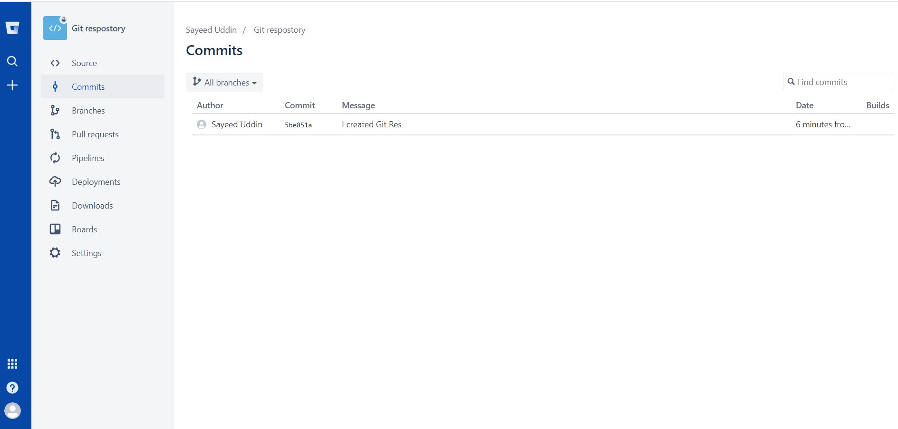
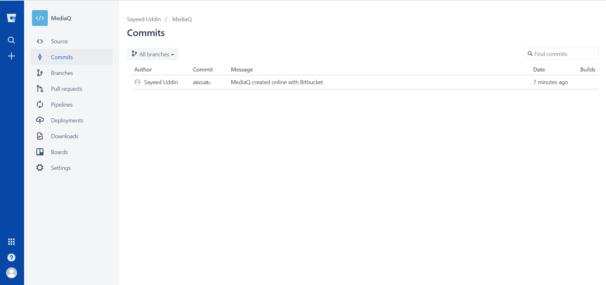
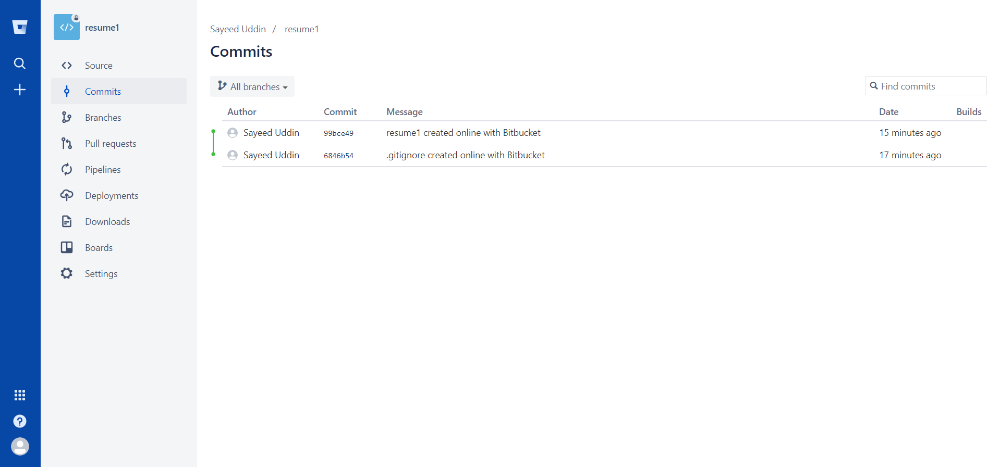

Git Repository Project
The Git repository project was kind of difficult when I first created. I had to watch several YouTube videos how to create git repository and how to commit it. Also, using Git and GitHub was totally brand-new to me at the beginning. However, as I start use GitHub it became familiar and became easy to use GitHub.
Media Queries Project
When first created Media Queries Project, I had to struggle a lot. I was trying to commit it in bitbucket, but it did not work even though I used bitbucket previously. When I tried to commit files, it did not show in bit bucket. I was kept doing it and I think it worked at the end. Using GitHub for this project was really easy since I knew how to use it. Also, I did not have any difficulties. Lastly, I successfully uploaded all my files to GitHub.
Skeleton Resume Project
Honestly, Resume was one of the easiest out of 3, even though I had little bit difficulties when I was trying to commit it. Using GitHub for this project was really easy since I knew how to use it. Also, I did not have any difficulties. Lastly, I was successfully uploaded all my files to GitHub.